Trail Tater Kitchen
Recipes we actually cook, eat and bring back on the next trip. Blackstone meals, campground breakfasts, camp-oven baking, Dutch-oven suppers, sweets and the shortcuts that make feeding a crew easier.
Start with the burritos →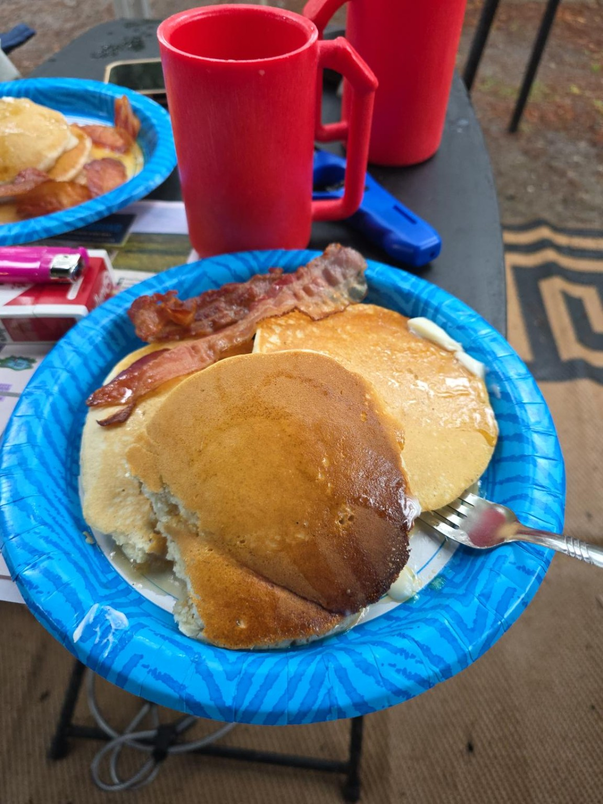
Holiday breads. Pull up a chair.
Eight recipes for holiday breakfasts, gifts and the family table. Open any recipe to read the full method or download its printable cookbook page.
Download all 8 holiday bread recipes
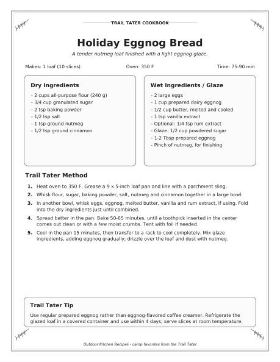
Holiday Eggnog Bread
A tender nutmeg loaf finished with a light eggnog glaze.
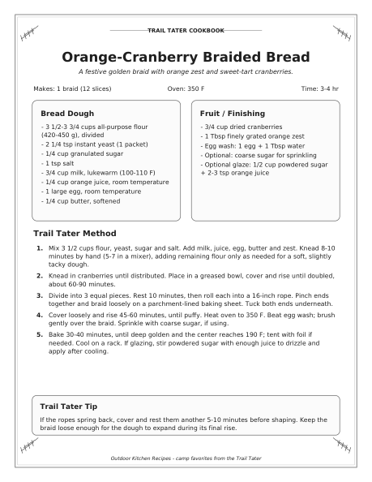
Orange-Cranberry Braided Bread
A festive golden braid with orange zest and sweet-tart cranberries.
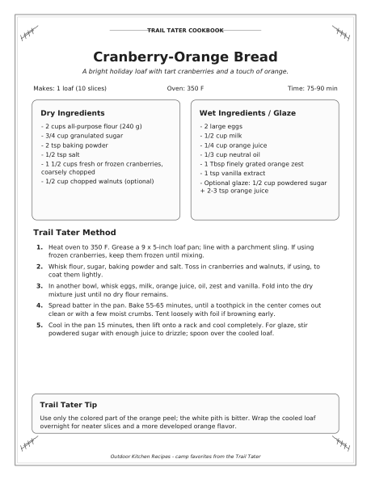
Cranberry-Orange Bread
A bright holiday loaf with tart cranberries and a touch of orange.
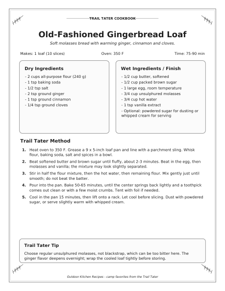
Old-Fashioned Gingerbread Loaf
Soft molasses bread with warming ginger, cinnamon and cloves.
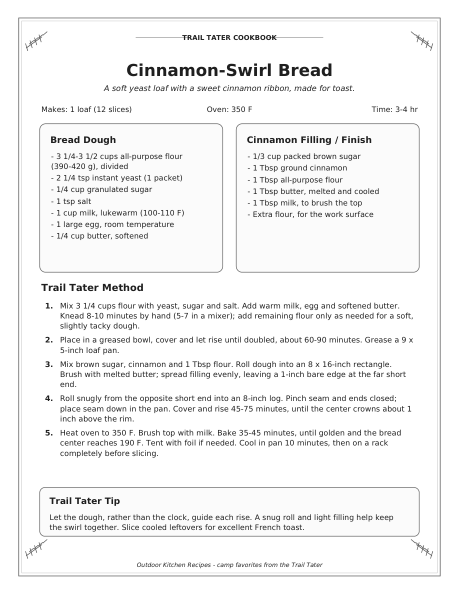
Cinnamon-Swirl Bread
A soft yeast loaf with a sweet cinnamon ribbon, made for toast.
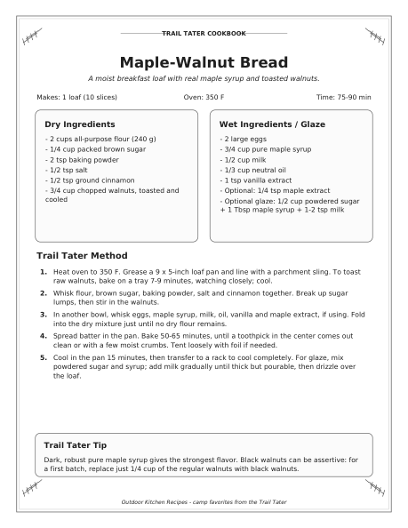
Maple-Walnut Bread
A moist breakfast loaf with real maple syrup and toasted walnuts.
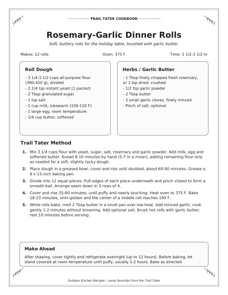
Rosemary-Garlic Dinner Rolls
Soft, buttery rolls for the holiday table, brushed with garlic butter.
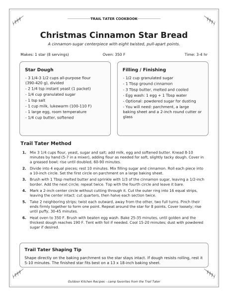
Christmas Cinnamon Star Bread
A cinnamon-sugar centerpiece with eight twisted, pull-apart points.
Start the day like you mean it.
Lost River Mountain Breakfast
Eggs your way, breakfast meat, mountain sides and camp coffee.
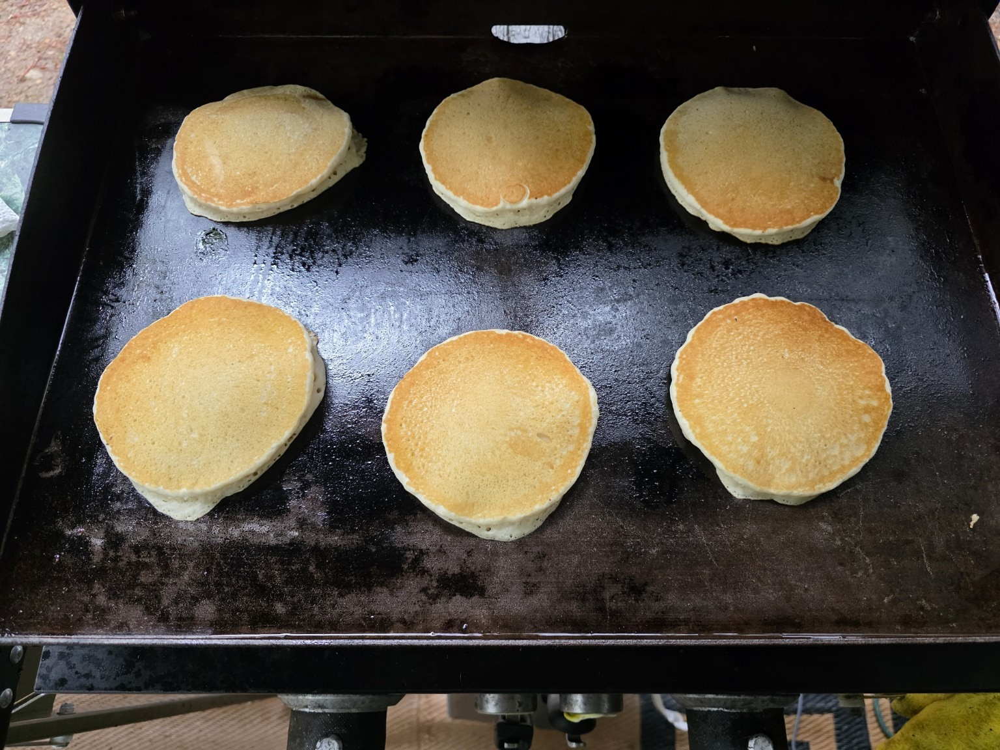
Trail Tater Shortcut Breakfast Potatoes
Carton hash browns with yellow pepper, onion and simple seasoning.
Kancamagus Breakfast Potatoes
Crispy cubed potatoes, onion and optional pepper on the Blackstone.
One hot surface. A lot of dinner.
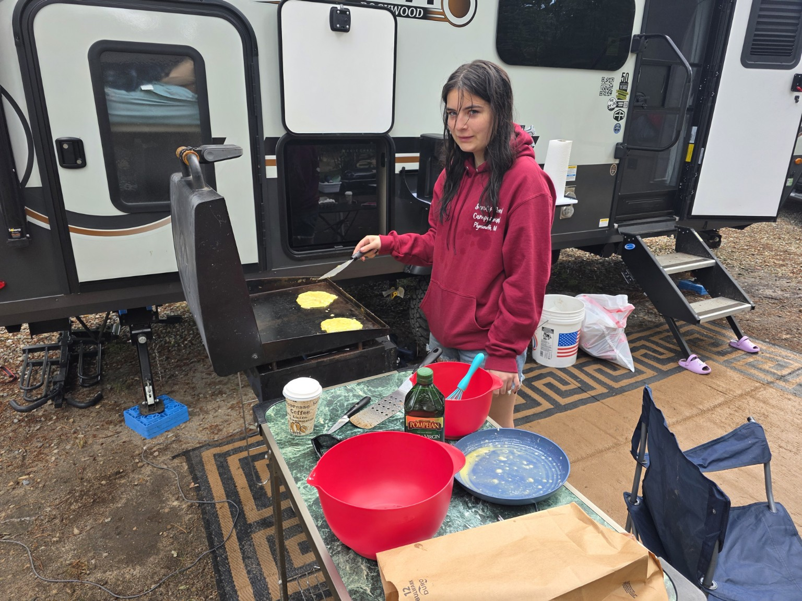
Trail Tater Steak and Cheese Burritos
Shaved steak, onions, peppers and provolone, wrapped and crisped on the griddle.
Shortcut Breakfast Potatoes
The space-saving breakfast potato shortcut that earned a permanent spot.
Kancamagus Breakfast Potatoes
The full from-scratch potato version for a big campground breakfast.